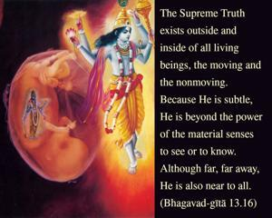
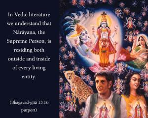

The Supreme Truth exists outside and inside of all living beings, the moving and the nonmoving. Because He is subtle, He is beyond the power of the material senses to see or to know. Although far, far away, He is also near to all.


In Vedic literature we understand that Nārāyaṇa, the Supreme Person, is residing both outside and inside of every living entity. He is present in both the spiritual and material worlds. Although He is far, far away, still He is near to us. These are the statements of Vedic literature. Āsīno dūraṁ vrajati śayāno yāti sarvataḥ (Kaṭha Upaniṣad 1.2.21). And because He is always engaged in transcendental bliss, we cannot understand how He is enjoying His full opulence. We cannot see or understand with these material senses. Therefore in the Vedic language it is said that to understand Him our material mind and senses cannot act. But one who has purified his mind and senses by practicing Kṛṣṇa consciousness in devotional service can see Him constantly. It is confirmed in Brahma-saṁhitā that the devotee who has developed love for the Supreme God can see Him always, without cessation. And it is confirmed in Bhagavad-gītā (11.54) that He can be seen and understood only by devotional service. Bhaktyā tv ananyayā śakyaḥ.